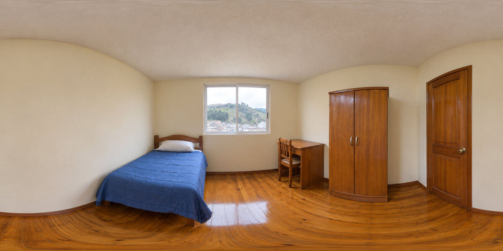
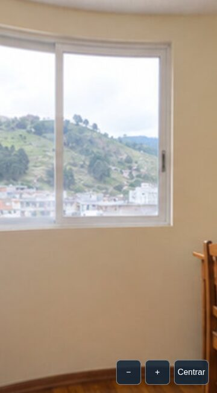
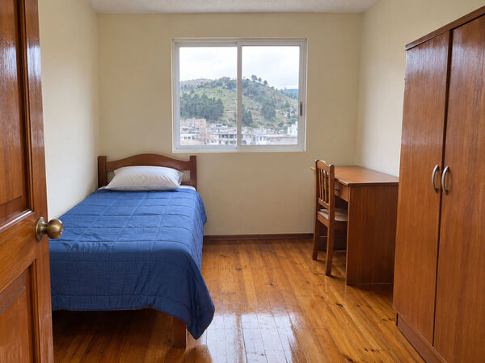
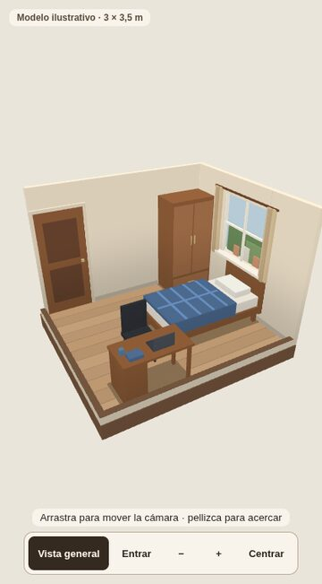
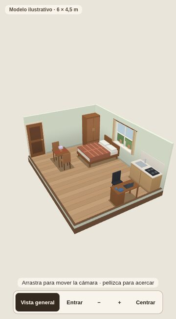
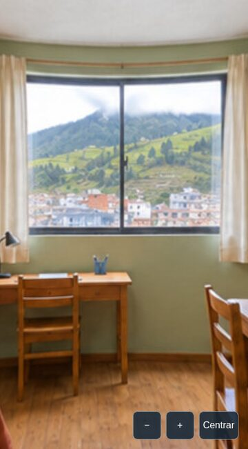

Guía rápida de funcionamiento · cuentas, inmuebles, fotos 360°, modelo 3D y panel de Bienestar UEB
| Rol | Correo | Qué puede hacer |
|---|---|---|
| Estudiante | Institucional @ueb.edu.ec | Buscar, filtrar, ver mapa y ficha, favoritos, comparar hasta 3, pedir visitas, contactar, reportar. |
| Propietario | Personal (no @ueb.edu.ec) + cédula válida | Publicar inmuebles, subir fotos y panorama 360°, crear el modelo 3D, pausar, marcar arrendado, responder visitas. |
| Administrador | Cuenta creada desde la base | Panel web: aprobar expedientes y anuncios, ocultar por reportes, crear cuentas de estudiante. |
Una misma cuenta puede tener los dos perfiles (estudiante y propietario). Los permisos se comprueban siempre en el servidor.
@ueb.edu.ec y clave de al menos 8 caracteres.BREVO_API_KEY y MAIL_FROM en Render. En local, el enlace aparece en la consola de la API.El propietario toca Publicar inmueble. El asistente tiene 4 pasos:
| Paso | Datos |
|---|---|
| 1. Datos | Tipo (Habitación, Departamento o Casa), título, dirección, dormitorios y descripción. |
| 2. Ubicación | GPS estando en el inmueble (precisión ≤ 50 m) o un toque en el mapa, sin dar permiso de GPS. Debe estar dentro de Guaranda (15 km). |
| 3. Precio y servicios | Campus de referencia, arriendo, depósito, servicios, cargos mensuales (un cargo con monto desconocido se marca por confirmar), contacto de WhatsApp y reglas. |
| 4. Fotos y publicar | De 1 a 5 fotos (JPEG, PNG o WebP de hasta 5 MB; la primera es la portada), declaración de autorización y Publicar. |
También se puede guardar como borrador. Al publicar, el anuncio pasa a En auditoría.
BORRADOR → EN_AUDITORIA → (Bienestar aprueba) DISPONIBLE ⇄ PAUSADO / ARRENDADO. Si Bienestar observa el anuncio, vuelve a borrador con el motivo. Si oculta un anuncio por un reporte, sale del catálogo y queda registrado quién lo hizo y cuándo.
Solo se ven en el catálogo los anuncios DISPONIBLE, aprobados y no ocultos. Una visita aceptada no marca el inmueble como arrendado.
| Sección | Acción |
|---|---|
| Expedientes | Ver los documentos privados del propietario y aprobar u observar. |
| Auditoría de anuncios | Aprobar (exige al menos una foto y ubicación dentro de Guaranda) u observar con motivo. |
| Reportes | Ocultar el anuncio o descartar el reporte. Queda registro del moderador y la fecha. |
| Usuarios | Crear cuentas de estudiante y reenviar el enlace de activación. |
App Android nativa (Kotlin, Jetpack Compose, MVVM) → API REST (Node.js y Express, JWT y bcrypt) → PostgreSQL 16. Mapas con osmdroid (OpenStreetMap). Producción: API y panel en Render y base en Supabase, con HTTPS.
Escenario. Martha publica la Habitación amoblada junto a la UEB (anuncio #9). Tiene un celular Android, una cinta métrica y 15 minutos.
En el paso 4 del asistente toca Agregar y elige de 1 a 5 fotos de la galería. El servidor revisa que sean JPEG, PNG o WebP de hasta 5 MB y conserva el orden. La primera foto es la portada. Sin al menos una foto, el anuncio no se puede publicar.
La app no convierte fotos normales en un 360°: el propietario sube una foto que ya es panorámica. Para tomarla, se para en el centro del cuarto y usa una de estas opciones:
El resultado es una imagen equirectangular: un rectángulo dos veces más ancho que alto que contiene toda la vuelta del cuarto.


El visor proyecta esa imagen dentro de una esfera. El estudiante gira con el dedo, acerca con +/− y vuelve con Centrar. Si la imagen no es 2:1, la app responde: “Use un JPEG panorámico 2:1, de 512 a 4096 píxeles de ancho”. Subir otro panorama reemplaza el anterior.
El 3D no se genera a partir de las fotos. Es una maqueta que el propietario arma en un formulario y que la app dibuja con las medidas reales:




El estudiante toca Explorar habitación en 3D: ve el cuarto desde arriba, pulsa Entrar para verlo a la altura de una persona, gira con un dedo y acerca con dos. La etiqueta Modelo ilustrativo deja claro que no es una foto.
| Tiene | Lo que ve el estudiante |
|---|---|
| Solo fotos | Galería, mapa y costos. No aparecen los botones de 360° ni de 3D (RF14). |
| Fotos + 360° | Además, Ver recorrido 360°. |
| Fotos + modelo 3D | Además, Explorar habitación en 3D. |
| Todo | Los dos botones, como en los anuncios #9 a #13. |
Crear el 3D o el 360° directamente desde fotos normales requiere fotogrametría o técnicas como Gaussian Splatting: decenas de fotos de cada cuarto y un servidor con tarjeta gráfica para procesarlas. Eso supera el alcance y el costo gratuito del producto mínimo viable, por eso se eligieron el panorama aportado por el propietario y el modelo ilustrativo. Queda como trabajo futuro.